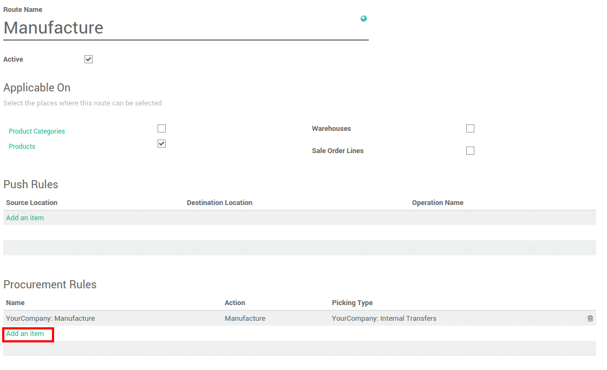

Overview
The procurement inventory control system begins with a customer's order. With this strategy, companies only make enough product to fulfill customer's orders. One advantage to the system is that there will be no excess of inventory that needs to be stored, thus reducing inventory levels and the cost of carrying and storing goods. However, one major disadvantage to the pull system is that it is highly possible to run into ordering dilemmas, such as a supplier not being able to get a shipment out on time. This leaves the company unable to fulfill the order and contributes to customer dissatisfaction.
An example of a pull inventory control system is the make-to-order. The goal is to keep inventory levels to a minimum by only having enough inventory, not more or less, to meet customer demand. The MTO system eliminates waste by reducing the amount of storage space needed for inventory and the costs of storing goods.
Конфигурация
Procurement rules are part of the routes. Go to the Inventory application>Configuration>Settings and tick "Advance routing of products using rules".

Procurement rules settings
The procurement rules are set on the routes. In the inventory application, go to Configuration > Routes.
In the Procurement rules section, click on Add an item.
Here you can set the conditions of your rule. There are 3 types of action possibles :
- Move from another location rules
- Manufacturing rules that will trigger the creation of manufacturing orders.
- Buy rules that will trigger the creation of purchase orders.
Примечание
The Manufacturing application has to be installed in order to trigger manufacturing rules.
Примечание
The Purchase application has to be installed in order to trigger buy rules.
Примечание
Some Warehouse Configuration creates routes with procurement rules already defined.